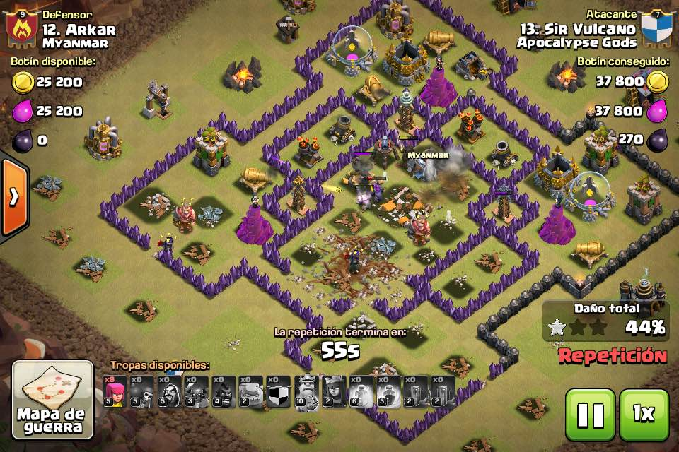

Bienvenido
Este es el primer post regresan los ataques culeros de vulcano jajajawooooow
[11:24, 28/4/2016] Jesus Vulcano: Cha no ma no se que me paso
[11:25, 28/4/2016] Jesus Vulcano: Me desconsentre bien feo
[11:25, 28/4/2016] Jesus Vulcano: Ya habia estado haciendo buenos ataques
[11:25, 28/4/2016] Jesus Vulcano: Con gowipe
[11:25, 28/4/2016] Jesus Vulcano: Pero tambien avente bien twrde el hechizo de terremoto
[11:25, 28/4/2016] Jesus Vulcano: Pense que ya lo habia echado
